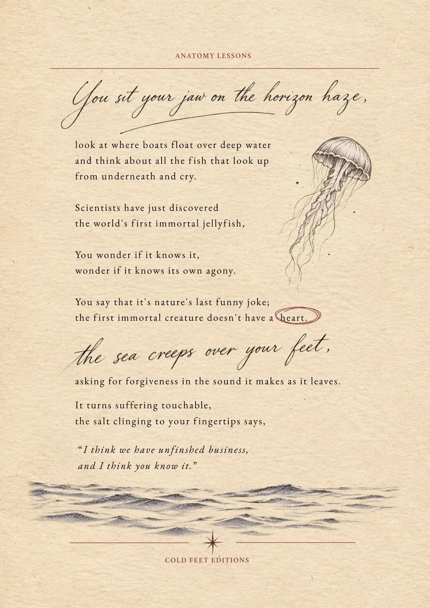
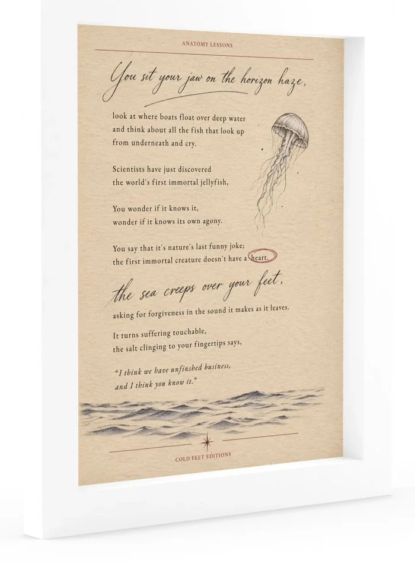
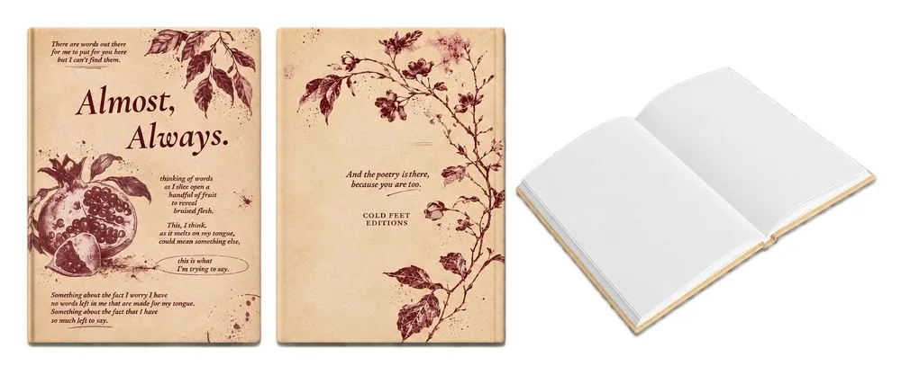
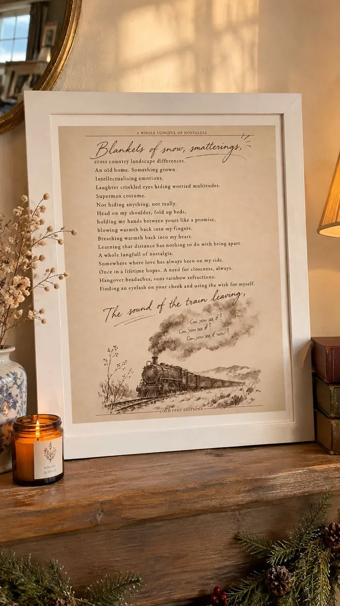
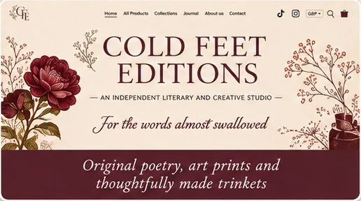
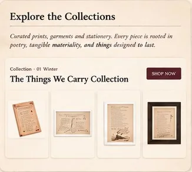
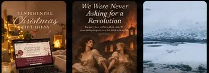

Building Cold Feet Editions
From original poetry to an independent literary brand
Words almost swallowed.

01 — The Brief
Poems into objects, on a small budget.
Develop a recognisable independent literary brand that turns original poetry and creative writing into tangible products, editorial content and meaningful audience experiences.
The brand had to feel intimate, creative and emotionally engaging while staying commercially accessible to readers, gift buyers and people who appreciate literature and art.
It was built with limited financial resources, so organic marketing, search visibility and thoughtful content creation had to carry the work.
What I was responsible for
- Brand identity and creative direction
- Website design and copywriting
- Product development and presentation
- SEO and Google Search Console
- Editorial content and storytelling
- Pinterest content marketing
- TikTok content creation
- Email marketing through Mailchimp
- Audience development and marketing strategy

02 — Research & Positioning
Intimate, but easy to buy.
The hard part was not making poetry look beautiful. It was making something private feel safe to buy, give and display.
Working audiences
Readers who want new poetry, gift buyers who need something ready to give, and people who love literature and art. These are working assumptions from the brief, to test against analytics.
03 — Visual Identity
Two voices, one page.
Expressive serif type, handwritten annotation, botanical illustration, warm paper and restrained dark-romantic detail.
Page ground
Cards and panels
Headlines, rules, accents
Body text


Annotated: one print, five decisions
- Two voices on one page. A handwritten opening line sits over typeset body text. The poet speaks first; the editor sets the rest.
- An illustration that answers the poem. The jellyfish is the poem’s subject, drawn once and small in the margin rather than used as decoration.
- The circled word. A teacher’s correction mark, repeated on the hoodie. One small device makes separate products read as one range.
- Ink-wash sea as base note. The only cool tone on a warm page, so the poem has somewhere to settle.
- A quiet maker’s mark. Wine rules, a compass star and the studio name close every print.
The products carry the identity





04 — Website & User Experience
A shop that reads like a magazine.
The site brings the brand first, then the objects, then the stories behind them. Visit coldfeeteditions.store.


What the structure is for
- Communicate the brand immediately. An editorial hero with wordmark, tagline and botanical art, so a visitor knows the world before scrolling.
- Help visitors understand the products. Named collections with a single line of copy each, and product pages that show the object and the poem together.
- Connect original writing to physical products. The poem’s own lines appear on the print, hoodie and desk mat, so the writing is the product, not a caption.
- Encourage product exploration. Navigation for All Products, Collections, Journal, About and Contact, with collections such as The Things We Carry.
- Build trust through editorial storytelling. The Journal and About pages show who is behind the studio and how the work is made.
- Support subscriptions and repeat visits. Newsletter sign-up beside the content people come back for: new essays, releases and seasonal collections.
From page to product
05 — Content & SEO
Essays that can be found.
Discoverability
Essays and gift guides answer the questions people type into search.
Brand personality
Long-form writing shows the voice that sells the objects.
Engagement
A reason to read, return and subscribe beyond a single purchase.
Product discovery
Internal links move readers from an idea to the object that carries it.
The Journal
On Radical Intimacy
A long-form essay. It carries the brand’s voice and gives readers a reason to stay.
We Were Never Asking for a Revolution
An essay that shares its title with a short video: the title appears as a TikTok cover in the supplied crop, so one idea works in two formats.
10 Poetry Gifts to Buy a Poetry Lover
A gift guide for people searching for presents. It is the Journal’s most direct route from reading to products.
Search work
Website metadata
Title tags and meta descriptions for the home page, collections, products and Journal.
Product descriptions
Descriptions that name the poem, the object and the occasion.
Internal linking
Journal posts link to products and collections, and collections link back to essays.
Google Search Console
Property set up to monitor queries, pages and indexing.
06 — Social Media Marketing
One identity, two jobs.
The palette, handwriting and poem lines stay constant. What changes is pace, format and purpose.
TikTok
Storytelling, literary content, emotional engagement and short-form creative campaigns. The voice does more of the work: a line, a mood, a reason to feel something in seconds.

Visual discovery, literary gifting, product inspiration and evergreen content. Product scenes and gift ideas in the same palette, made to be saved and found months later.

Seasonal gift ideas appear on both platforms in the supplied crops, so one theme is told as a story on TikTok and as a saveable guide on Pinterest.
07 — Email Marketing
Margins are where the handwriting lives.
Notes from the Margins is the newsletter: an owned audience that does not depend on a platform’s algorithm.
The name borrows the margin, where readers annotate and where the studio’s handwritten notes sit. It sets the tone before the first email is opened.
08 — Marketing Strategy
From stranger to returning reader.
I mapped the customer journey in five steps and treated measurement as a layer beneath all of them.
Discovery
Mind map: Attract
TikTok stories, Pinterest pins, search results, gift and seasonal content.
Completed workEngagement
Mind map: Engage
Journal essays, behind-the-scenes content, the editorial homepage.
Completed workProduct exploration
Mind map: Convert
Collections such as The Things We Carry; poem-to-product storytelling.
Completed workSubscription or purchase
Mind map: Grow and convert
Newsletter sign-up for Notes from the Margins, and the shop.
Completed workReturn
Mind map: Sustain
Newsletter issues, new releases and seasonal campaigns.
Completed work
Measure, under every step. Track views, engagement, traffic and sales; find the content that performs; adapt formats, posting times and campaigns. See Results & Learning for what the project has taught me so far.

09 — Results & Learning
No number without a source.
What I have learned so far
Limited budget made content do double duty: the same poem, image or essay had to build the brand, be findable and lead to a product.
One small device, the circled word, links a print and a hoodie. A recurring mark made separate products read as one range.
10 — Next Steps
What is done, what is proposed, what is next.
- Brand identity, website and product presentation
- Journal essays and a poetry gift guide
- TikTok and Pinterest content
- Notes from the Margins newsletter in Mailchimp
- SEO and Google Search Console
- Same idea, three doors. Publish one poem line as a TikTok, a Pinterest pin and a Journal excerpt, each with a tagged link. Compare which leads most visitors to subscribe. Measure: Tagged-link clicks and sign-ups.
- Lead magnet. Offer a free poem or desktop wallpaper at sign-up and compare the sign-up rate with the current form over the same length of time. Measure: Mailchimp sign-ups.
- Gift guide refresh. Update the poetry gifts guide with a link to every product before the gifting season, then compare its clicks and impressions with the previous period. Measure: Search Console.
- Subject-line test. Send two styles of subject line for Notes from the Margins, one poetic and one plain, to halves of the list. Measure: Mailchimp A/B result.
- Grow the audience beyond social media
- Expand the collections
- Explore collaborations
- Keep a realistic, values-led content rhythm